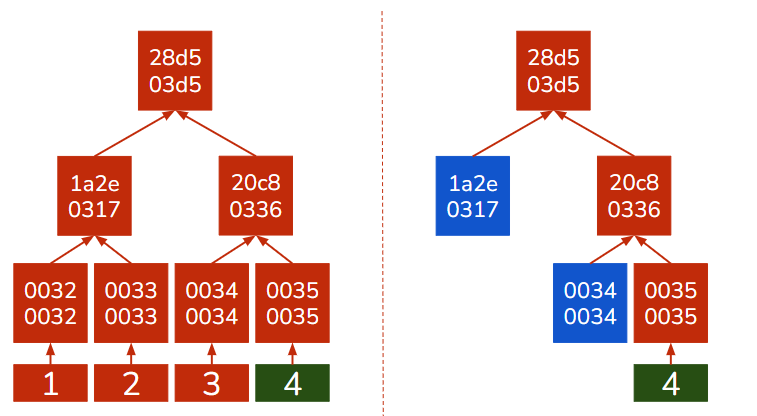
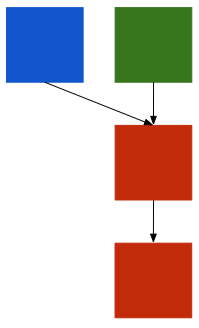

3.1. Chapter¶
In the first chapter we described blockchain as a network which maintains the blockchain data structure. In this chapter we will explore this network and understand how its participants coordinate to keep the blockchain data structure valid.
As a refresher the network is composed of potentially millions of computers, called nodes. Nodes are responsible for storing, adding to and verified the blockchain data structure and as we will see they come in many flavours. Nodes are often connected to each other in a random combination forming a web of connections that is the distributed system of blockchain. This web is responsible for transporting any and all information on/about the blockchain.
3.1.1. Nodes¶
Nodes are the basic building block of networks. Nodes are devices that connect with other devices to share data the network cares about, in our case BADS. This is a vague definition and that is because there are different types of nodes:
‘Full’ Nodes - Nodes that store the entire blockchain and can verify all data independently and produce blocks. When we just say ‘nodes’ we typically mean full nodes.
‘Light’ Nodes - Nodes that only store the block headers and need the help of full nodes to verify data. Typically, don’t produce blocks. When we talk about light nodes we will explicitly mention they are light nodes.
‘Light’ Nodes are a solution to the fact that some network participants can’t store the whole blockchain. The benefit of light nodes is that they can still verify incoming data, a useful feature for nodes that want to host wallets in currency blockchains like Bitcoin. They do this as follows:
They send a connected full node the hash of the data they want to verify
The full node locates the block the data is in and sends a merkle path to the light node
The light node uses the merkle path to construct a merkle root and if it matches the root in its block header the data is valid as it is in the blockchain.
Note
Merkle Paths are an efficient solution to proving whether a piece of data is in a merkle tree. Rather than use all the data and let the light node construct the merkle root from scratch we only need the hashes of the nodes that come into contact with the path from the root to the piece of data we want. This means that we only need to send a couple of hashes rather than the whole merkle tree. This helps efficiency.
 If we want to verify that 4 is in our merkle tree we don’t need the whole merkle tree to do it. Assuming we know what the root is supposed to be we only need the hashes highlighted in blue and we can calculate the rest, shown in red.
3.1.1.1. Node Gossip¶
In a distributed system and network like Bitcoin there is no authority to manage connections so nodes have to manage them on their own. Node communication is often analogized to gossiping.
Nodes often store a ‘contact list’ of connected nodes and they often ‘ping’ their contacts to check if they are new. If a new node arrives nodes share their contact lists so the node can quickly connect with others. Nodes typically have multiple connections, between 4-5, to make sure any connected node going offline or turning out to be malicious doesn’t severely impact the node.
Nodes therefore form a disorganized connection network where they gossip information about the blockchain. Nodes can come and leave as they wish without affecting the network at-large. This greatly adds to the stability of the network.
Tip
Nodes leaving and going as they please is one of the benefits of distributed networks vs centralized ones. If the ‘leader’ node leaves in a centralized network that network stops functioning.
The gossip network is also optimized against malicious data. Nodes don’t blindly relay data they receive as that could clog up the network with useless or malicious data. Every time a node receives a piece of data or block it verifies it. If the data/block is valid and is new, the node hasn’t seen it, the node stores it and sends it to the nodes in its connection list. If the data/block is invalid the node discards it, sends it to no one, and potentially removes the node who sent it that data from its contact list.
Information propagates through the network from node to node and because one node sends it to multiple nodes the spread is exponential. This means that data, if valid, propagates through the entire disorganized network in a matter of seconds while invalid data is stopped at the first nodes that receive it. The origin of data is not shared so when a node receives data/block it doesn’t know where it originally came from.
Nodes technically have no responsibility to do anything, propagate data or generate blocks. Many nodes don’t generate blocks. Full nodes that do, store data that is valid but not in a block yet in a special area called a mem pool, in the case of Bitcoin. When nodes create new blocks the data they contain comes from the mem pool. If a node receives or generates a valid block the data it contains is removed from its mem pool.
3.1.1.2. Node On-boarding¶
We mentioned that nodes can come and leave as they please. This means nodes go out of sync with the rest of the network and their blockchain is incomplete, or non-existent when it’s a completely new nodes. A node that is completely new to the network does the following:
You start with the most recent trusted block, the newest block you trust to be valid. For new nodes this block is the genesis block that is hard-coded in the blockchain implementation.
Reach out to other nodes in the network, as you connect with nodes you receive their contact lists and reach out to even more nodes.
You ask your connections for all the blockchain data & blocks they have.
You verify the data/block and if it references your most recent trusted block you add to your own blockchain. If it doesn’t reference that block but is otherwise valid you keep hold on to it, it’s possible that you received a valid block before you got some of its predecessors.
Repeat step 3 & 4 until your most recent trusted block is also the blockchains most recent block, this can take a couple of days.
Tip
We occasionally use the word hard-coded. This means that this piece of data is a part of the implementation and anyone who has the implementation automatically has the data.
For a light node the process is simpler and faster as you only receive the block headers which can be quickly verified, do they reference the most recent trusted block header and do they meet the blockchain’s block validation guidelines.
3.1.2. Consensus¶
Formally consensus is when a network reaches the same conclusion. For the blockchain the same conclusion means the same BADS. Consensus guarantees Blockchain’s ‘identicalness-as-a-requirement’. Consensus is a fascinating subject because it is a process that happens independently at every node but the result is always the same.
Consensus determines what a valid block is and guarantees that it is added to every node’s blockchain.
Consensus can be achieved through a number of consensus algorithms. We will be looking at the two of the more famous algorithms: Proof-of-Work and Proof-of-Stake.
3.1.2.1. PoW¶
Proof-of-Work (PoW) is a consensus algorithm that depends on hashing. Its primary component is the hash puzzle which is composed of a target value that the block header’s hash has to be smaller than the for the block to be valid. Getting such the desired block header hash is done by altering the nonce, a field in the block header, and is intentionally difficult to solve. A value called the difficulty determines how low the target is, difficulty and the target value are inversely correlated so a higher difficulty means a lower target. To keep the ABCT (Average Block Creation Time) constant the difficulty is regularly updated.
PoW is a competition between nodes for who solves the hash puzzle, gets a block header whose value is smaller than the target. Blockchains typically reward the node that wins this competition. This means nodes are incentivized to try to solve the hash puzzle and when someone claims victory, to critically analyze their winning block, as no node wants to lose a potential reward to a cheat.
To win PoW nodes can only do one-thing, guess. There is no clever way to solve the hash puzzle, nodes just have to guess a million numbers and check if any of them get the desired block header. This means millions upon millions of calculations, most of which will go to waste. This is incredibly inefficient and PoW has been criticized for being so wasteful.
PoW also shifts the definition of an honest majority in a blockchain. In this consensus algorithm an honest majority is an honest majority of computing power. This one-cpu one vote ideology has the shortcomings that it benefits richer miners with better equipment.
Difficulty is also used to determine what chain is the valid one. In PoW we might have malicious actors trying to push their fraudulent chain of the blockchain to be the valid one. To prevent this, PoW defines the valid chain as the one with the most cumulative difficulty. The reasoning is that if we have an honest majority of computing power then it will be able to produce the most blocks with the greatest difficulty and therefore always be ahead of any attackers.
Note
When we talk about chains we talk about a sequence of blocks pointing to each other. These chains might share some nodes, all share the genesis block, but disagree on others. In PoW we might have multiple competing chains at the same time due to forking, which we will cover shortly, or because of malicous actors trying to push a fraudulent blocks.
3.1.2.2. PoS¶
Proof-of-Stake (PoS) is a consensus mechanism where nodes can only propose and validate blocks if they stake the blockchains native token, if it has one. By staking we mean that the node stores the blockchains token for a given period of time without moving it. These tokens are staked to act as collateral against malicious behaviour, if a node produces a block with invalid data or validates a block like that is loses some of its tokens, this is known as slashing. Nodes can have two roles in a PoS system: producers (responsible for actually producing the block) or validators (responsible for checking the block is valid).
PoS is alot more diverse in its implementations than PoW. In some implementations, like PeerCoin, nodes become eligible to produce blocks as soon as they stake their currency for a period of time, for PeerCoin 30 days, while others, like Ethereum 2.0, it is a more organized process.
In Ethereum 2.0 the process is more structured and nodes need to stake at least a set number of tokens, in Ethereum 32 Ether, to be considered to produce the next block. The actual producer of the block is chosen pseudo-randomly by the blocks and while the other staked nodes become validators and are put into committees. Before a block is validated it needs to pass a number of these committees and any malicious behaviour, either on the side of the validator or producer, is strictly punished.
Note
The last paragraph might be a bit confusing. Pseudo-random: didn’t we say that bad? Yes and no. It’s bad when used for cryptography but here we are only deciding which node gets to produce the next block. We are also doing so based on data about the blockchain that is produced unpredictably, so pseudo-random is fine here. This might seem like a very unsatisfying answer and that is because the actual process of producing the same pseudo-random number at every node independently is an incredibly difficult thing to do. On Ethereum it is done by something called the Beacon Chain and RANDAO, both programs, which also decide which nodes are the producer and validator. Discussion of these two in any sort of depth is far beyond the scope of this textbook.
PoS defines an honest majority as a majority of the staked tokens. The rationale behind this is that even when a malicous party has a majority of the staked tokens they wouldn’t want to undermine the blockchain they are so heavily invested with. Valid chains are determined either still by difficulty, through a simplified hash puzzle that has to be solved on top of PoS, or determined by programs like the Beacon Chain in Ethereum 2.0 . But in general, the number of chains in PoS is greatly reduced so determining the valid chain is alot less complicated, and we pay it less mind.
PoS blockchains still reward producers and some, like Ethereum 2.0, also reward validators. This makes them a more reliable source of tokens than PoW that is just a winner-take-all competition.
Tip
This reliability is the primary driver of the popularity of staking. Where cryptocurrency holders stake their tokens in reward for interest.
The benefits of PoS is that blocks are produced relatively easily, you just collect a set of valid data and produce a block around it. This means there is far less processing waste than with PoW as there is no hash puzzle to solve, or it’s very simple to solve like in the case of PeerCoin.
3.1.2.3. PoW v PoS¶
Proof-of-Work was the first consensus algorithm used on the blockchain through Bitcoin while Proof-of-Stake started showing up a couple years later. In many ways PoS was created to address the shortcoming of PoW but both consensus algorithms have their pros and cons.
Algorithm |
Pros |
Cons |
|---|---|---|
PoW |
Is battle-tested and more reliable than PoS |
Very inefficient by design |
PoS |
More efficient and doesn’t benefit better equipped miners |
Higher cost of entry than PoW, you have to stake tokens to participate |
Tip
The benefit of PoW might seem strange. Why would we care that PoW has more real-world experience when it is less efficient? The answer is that for some projects, like rockets, reliability is far more important than efficiency. This is the reason why the latest rockets use processor older than anything you could currently buy.
3.1.3. Maintaining the Network¶
We have covered how a blockchain network ought to run to maintain BADS but we still need to figure out how to maintain it. We need to address how are accidents/mistakes solved and who actually partakes in block production/validation.
3.1.3.1. Forking¶
3.1.3.1.1. Accidental Forking¶
{kind=link}
We called PoW a competition, but what happens when we get a tie? When two nodes produce two valid blocks at the same time and propagate it through the network we will have a split. Some nodes will have a different blockchain from the rest following the very consensus algorithm that was supposed to prevent this. What do we do?
First we must mention that accidental forking is rare, this does not happen every time a block is produced, so we are dealing with an infrequent situation. When this happens the blockchain has two valid chains, as the difficulty should be the same. This is called forking. Nodes can and do detect it and store both chains but work on a block that only goes on top of one of them, as linked-list nodes can only point to one other node. This means that when the next block is produced it will only reference one chain and then the cumulative difficulty definition of a PoW chain kicks in. The chain that the new block references becomes the valid chain and the other is discarded.
Tip
It is theoretically possible that two blocks are produced at the same time when there is already a fork. This is very unlikely and even if it happens we just wait until only one block is produced and then apply the above.
3.1.3.1.2. Intentional Fork¶
The above happens accidentally. We don’t want two chains, but it happens by chance, and we can’t predict. This happens when the blockchain implementation changes rules and nodes are divided by whether they follow the new ones or not. There are two types:
Soft Fork - The rule changes are such that even nodes that don’t follow them can add valid blocks under the new rules (i.e. increases the block size).
Hard Fork - The rule changes are such that nodes that don’t follow them cannot add valid blocks under the new rules (i.e. change data validation).
While both can produce two chains (forks) the latter is far more likely to do so and two chains can continue to exist for a very long-time, this is in contrast to accidental forks where two chains exist only temporarily. Forks can cause the creation of new blockchain projects (Bitcoin and Bitcoin Cash).
3.1.3.2. Miners¶
Consensus is therefore critical to the survival of any blockchain but because nodes aren’t forced to create or validate blocks we need some sort of incentive.
3.1.4. Types of Blockchain¶
3.1.5. Byzantium¶
{The big finish, go over the whole problem explain what we learned in the first two chapters and explain the last puzzle piece and then explain the whole thing}
This chapter concludes the basics. If you only wanted to know the basic building blocks of a blockchain congratulations, you now know them. The next part of the textbook will take what we learned and apply them to actual blockchain implementations. Up to now we were largely in the idealistic theoretical realm but as you will see in the coming chapters’ implementation is not always clean.